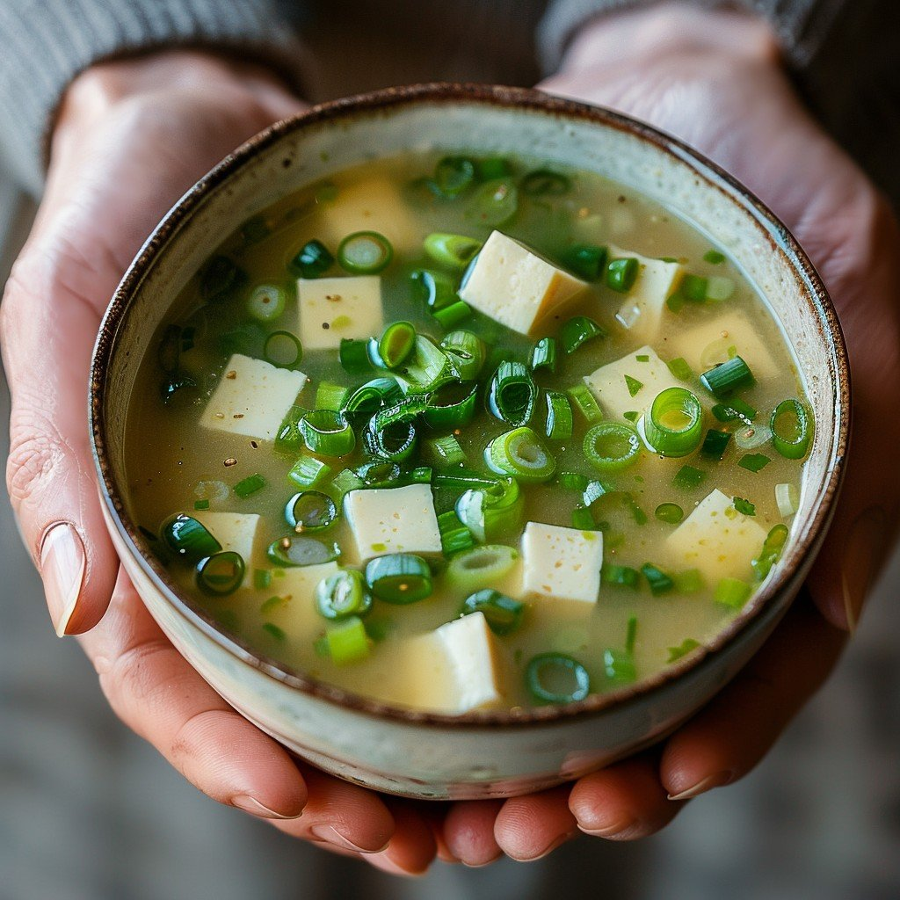

Home
Miso Soup

Description
Miso Soup is a traditional Japanese soup made primarily from
a fermented soybean paste called miso,
which gives the soup its signature savory (umami) flavor.
It's a staple in Japanese cuisine and is commonly served as
a side dish with meals, especially breakfast or as part of a multi-course meal.
Ingredients
- 4 cups of water
- 2 teaspoons dashi granules
- 3 tablespoons miso paste
- 1 package
silken tofu, diced
- 2 green onions, sliced into small pieces
Steps
- Gather all the Ingredients
- Combine water and dashi granules in a medium saucepan over medium-high heat; bring to a boil.
- Reduce heat to medium and whisk in miso paste.
- Stir in tofu.
- Add sliced green onions to the soup. Simmer for 2-3 minutes before serving
Home